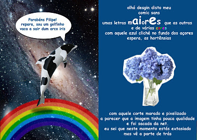

Jan 11 Então de maneiras que o Filipe faz anos hoje, e vai daí decidi fazer-lhe um postal. (é um postal, tá invertido) Posted 11th January 2012 by euexisto xilega 11th January 2012, 18:05 Epá com cenas assim como é que um gajo tem palavras. Com um grafismo digno de qualquer agência gráfica este é sem dúvida um dos melhores postais da minha vida kisá vidas anteriores. Carlota 11th January 2012, 17:21 LOOOOOOL melhor postal de sempre!!!!!!!!!!!! xD euexisto 11th January 2012, 13:55 a meio ou por dentro leva assinaturas do pessoal cá da empresa (era gastar muita tinta) Phyxsius 11th January 2012, 12:43 E a parte de trás? Votos de relações sexuais incríveis, como o chefe da Polícia Municipal cá do burgo? Anonymous 11th January 2012, 10:40 Quem necessita do Fb quando tem o Júlio a lembrar-nos que o Filipe está de aniversário! Boa! :-)- m ← voltar ao arquivo
{kind=link}
Epá com cenas assim como é que um gajo tem palavras. Com um grafismo digno de qualquer agência gráfica este é sem dúvida um dos melhores postais da minha vida kisá vidas anteriores.
LOOOOOOL melhor postal de sempre!!!!!!!!!!!! xD
a meio ou por dentro leva assinaturas do pessoal cá da empresa (era gastar muita tinta)
E a parte de trás? Votos de relações sexuais incríveis, como o chefe da Polícia Municipal cá do burgo?
- m